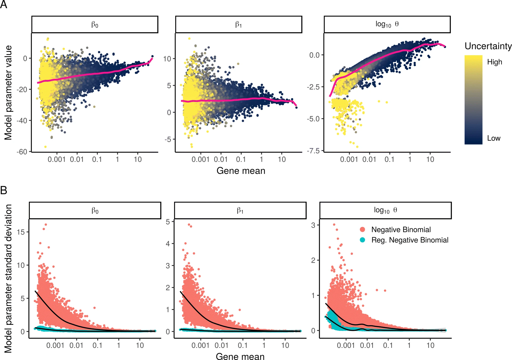
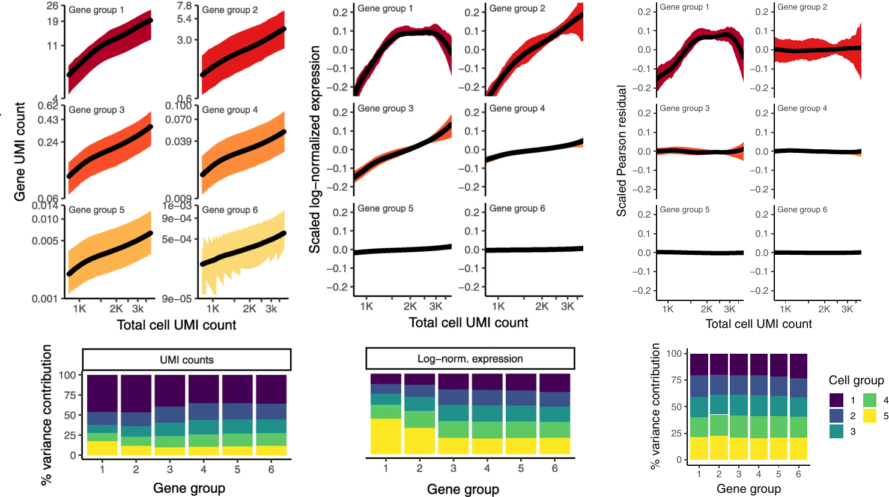
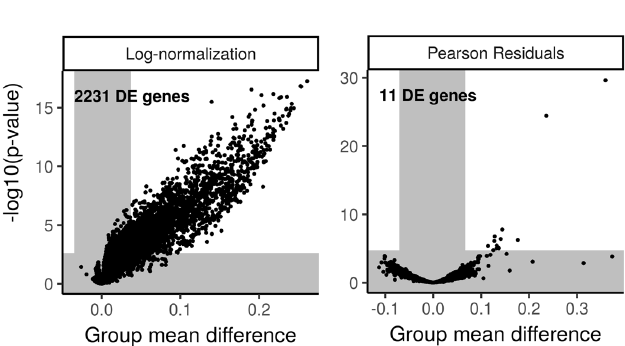

Paper Review | Normalization and variance stabilization of single-cell RNA-seq data using regularized negative binomial regression
Looking through the veil of technical bias
For this bi-weekly paper review, my choice fell upon a paper that I’ve skimmed through multiple times before, but never gave the proper read-through it deserves. It was a definite given when I started to curate a list of papers that I wanted to include in this series of reviews. Not only do I find it to be an elegant and well-composed paper, but it has had nothing but an /imperative/ influence on the RNA-seq based analysis these last years. In the paper, they present a model for normalization (and variance stabilization) of single-cell RNA-seq data, which now has become widely adopted within the community. Almost every paper not focusing on method development that I’ve stumbled across, use the “sctransform” package or derivatives of it to normalize scRNA-seq data. Thus, without further ado let us begin.
Paper Title : Normalization and variance stabilization of single-cell RNA-seq data using regularized negative binomial regression
Authors : Christoph Hafemeister and Rahul Satija
Published 23 December 2019
doi : https://doi.org/10.1186/s13059-019-1874-1
Review : Anyone who has ever worked with single cell RNA-seq data knows that before any “flashy and cool” results can be extracted, we need to apply some pre-processing steps to our data. Aside from filtering for low quality observations or irrelevant features, the very first step - and perhaps most important - tends to be normalization of the data. Normalization is a dead given in any analysis workflow, but let us just take one step back and ask why? Why do we care about normalization, why can’t we just “jump right at it”?
Probing our data with the right tools will allow us to identify cell types and cell states as well as cell-to-cell variations. However if we aren’t careful technical factors might confound these results, making us come to incorrect and false conclusions regarding the patterns in our data. One technical factor that has a huge influence on the result of our downstream analysis is the sequencing depth. For example, imagine that we have two cell types A and B, where cells of A in general have higher transcriptional activity than those of B. Now if we were to compare the (raw and unprocessed) expression of a houskeeping gene between cells from the two types, it would be listed as upregulated in A, even though we expect all housekeeping genes to be of approximately equal relative expression across cell types. This is of course undesireable, and we therefore attempt to normalize the data, in order to remove any technical variation while preferably maintaining biological differences.
The authors define two “objectives” or criteria, that should hold for a single-cell data set to be considered sucessfully normalized:
- Normalized expression should be uncorrelated with sequencing depth of cells.
- Variance of a normalized gene (across cells) should not be affected by gene abundance or sequencing depth.
In contrast to the two previously existing paradigms of using either cell-specific scaling factors or probabilistic approaches they consider their approach as more of a statistical approach, distinct from the others. I would perhaps say that their strategy could fit into to the set of probabilistic approaches, but that’s a minor detail.
The method they present builds on a generalized linear model (GLM) where they use a constrained negative binomial error model, with sequencing depth as a covariate, and a log-link function for the mean.
After evaluating different error models such as: an unconstrained Poisson, a Negative Binomial and a Zero Inflated Negative Binomial (ZINB), they noticed that the Poisson was not flexible enough, while the unconstrained NB and ZINB models were prone to overfitting. Therefore, as is common in several bulk normalization methods, they decided to regularize the model parameters by pooling information from genes with similar mean expression values, resulting in a regularized negative binomial regression. The constrained part is one of the model’s key features, the other one being to include the sequencing depth as a covariate. We will soon come back to the regularization, but let us first just briefly look at their GLM model:
$$ \log(E[x_{gc}]) = \log(\mu_{gc}) = \beta_{0g} + \beta_{1g} \log_{ 10 }(m_c) $$
Where $x_{gc}$ is the expression of gene $g$ in cell $c$, and $m_{c}$ is the library size used as a proxy for sequencing depth.
In short, this means that the authors make the implicit assumption that most genes are not differentially expressed; genes have a common baseline ($\beta_{0g}$) and differences across cells will mainly be due to their varying library size (influence controlled by $\beta_{1g}$).
The negative binomial has one more parameter that we need to pay attention to, the dispersion parameter $\theta$ which gives us the variance of our data. That is, if:
$$ x \sim NB(\mu,\theta)$$
then
$$E[x] = \mu, \quad Var[x] = \mu + \frac{\mu^2}{\theta}$$
Interestingly, the authors convincingly show that if we were to learn one set of parameters for each gene, these will be severely overfitted. What really made me appreciate the prevalance of this overfitting, was the results they present in Figure 2 (included below).

In the top row they show the estimated parameter values plotted as a function of gene mean; in a good model we would expect to have similar parameter values for genes with similar mean values. In the bottom row, they fit their GLM model to a random subsets of the data and assessed the variance of the parameter values (in a bootstrap fashion), showing how the variance (red dots) was very high, especially for low and medium expressed genes.
To remedy this issue of overfitting, they regularize their model, though not using the regularization terms that perhaps most of our familiar with like a $l_1$ or $l_2$ penalty. Instead they pool information from several genes to make more robust estimates. They first fit one GLM to each gene, but then proceed to apply kernel regression to the resulting parameter estimates. The intent being to learn regularized parameters that depend on a gene’s average expression. The blue dots in panel B of the figure above show the variance after using this regularized approach; as you can see the variance in parameter estimates is significantly reduced.
Though, we still have some work left to do before our data is normalized. Having obtained the set of regularized parameters, one applies this regression model to the data in order to compute the residuals ($r_{gc}$).
$$ r_{gc} = x_{gc} - \mu_{gc}, \quad \mu_{gc} = \exp[\beta_{0g}+ \beta_{1g}\log_{10}(m_c)] $$
The residuals represent the difference between the response estimated mean and the observed expression value. But as one might remember, for the negative binomial, the variance can differ between genes even though they have the same mean ($\mu$), an effect of the dispersion parameter $\theta$. Thus, we will not use the raw residuals, but what is known as the Pearson residuals ($z_{gc}$), which account for the gene-specific variation term:
$$ z_{gc} = \frac{r_{gc}}{\sigma_{gc}}, \quad \sigma_{gc} = \sqrt{\mu_{gc} + \frac{\mu_{gc}^2}{\theta_g}} $$
This transformation presents the residuals in units of standard deviations, correcting for the specific gene variance. Implementationwise they also clip their $z_{gc}$ values to be less than $\sqrt{N}$ (where $N = $ number of cells), in order to “reduce the impact of extreme outliers”. This value seems to have been determined fairly empirically.
The Pearson residuals are treated as normalized expression levels; the idea being that we’ve now regressed out any contribution from the sequencing depth to the observed expression levels. Using Pearson residuals has one additional benefit, being that the transformation we apply to compute them is inherently variance-stabilizing.
The image below is a merge between Figure 1C-E and Figure 3A-B and requires a bit of explanation in order to make sense. The curves represent the expression values as a function of cell UMI count where the genes have been divided into six groups based on their average expression in the data set. The six groups are not equally sized, but represent bins with equal width spanning the expression range. The bottom bar graphs are slightly more complex; the same six gene groups are used, and the cells are divided into five equally-sized groups with increasing average sequencing depth (group 1 having the highest value). Next, they calculated the total variance in each gene to then see how much each cell group contributed to this value. In perfectly normalized data, one would expect to see an equal contribution (here $20\%$) between the cell groups, as gene expression should be uncorrelated with sequencing depth (criterion 1 from their “objectives”).

Comparing the use of Pearson residuals with raw UMI counts and log-normaliztion, we observe the following:
-
Using raw UMI counts, a clear correlation between sequencing depth and gene expression in all ranges of gene expression is present. Log-normalization mitigate this issue among lowly expressed genes (group 4-5), but it persists in the high and medium expressed genes. The regularized negative binomial normalization renders values near completely independent (a horizontal line) of the sequencing depth, only very highly expressed genes still show some dependence; the authors claim that this is likely due to very few genes of such expression being present in the data and the regularization process thus becomes less robust.
-
There’s an unequal variance contribution in the two alternative approaches. One example that the authors highlight is how cells with low UMI counts have a disproportional influence on the variance among high-abundance genes in the log-normalization method. Something that might dampen the contribution from other gene groups. In the regularization based method, we see a very - almost surprisingly - homogeneous distribution of the variance.
The authors also, which I appreciate, show how the normalization can impact the downstream results as well. The most striking example - in my opinion - is when they compare outcomes of a DE (Differential Expression) analysis. They construct a simple but clever experiment, where they first grabbed all CD14+ monocytes (5551 cells) from the PBMC data set they use throughout the paper. They then split this set into two equally-sized (and mutually exhaustive) subsets, followed by downsampling of the UMIs in one of the subsets, giving them $50\%$ of their original UMI counts but with the same distribution as before across the genes. They then subjected the two groups to a t-test in order to find DE genes. Obviously, since these are cells from the same population, we expect zero DE genes if our data is properly normalized. As you can see in the figure below (modified Figure 6E), this was not quite the case for the log-normalized data:

Rather than finding zero DE genes, using log-normalization gave us $2331$ of them. The regularized negative binomial regression wasn’t perfect either, but it gave us $11$ false positives, about $0.5\%$ of $2331$. The authors also point out that these $11$ genes are all highly expressed genes, where we know the regularization process had some issues. They also looked into masking of true DE genes between populations of different sequencing depths and showed how log-normalization can give some weird results in these cases (incorrect assignment of DE genes) while their approach seemed to give the expected results.
The paper contains some other interesting results, but what I’ve presented above captures the “geist” of their method and is - at least to me - convincing enough. Thus, I’d like to focus a bit on their implementation.
First I should say that the claim (in the abstract) that their procedure “omits the need for heuristic steps including psedocount addition or log-transformation”, might be a bit of a stretch. Indeed, they don’t use a pseudocount in a log-transformation, but they use a variant of the geometric mean (more robust than the arithmetic mean to outliers) when computing gene average expression:
$$\exp(\frac{1}{|C|}\sum_{c\in C} \log(x_{gc}+\varepsilon)) - \varepsilon $$
where $\varepsilon$ is “a small fixed value to avoid $\:\log(0)$”, which they set to $\varepsilon = 1$ after trying several values in the range $[0.0001,1]$. In my ears this sounds an awful lot like a pseudocount, but again, minor detail.
The most time-consuming step, as expected, is to fit a GLM to each gene (before the kernel regression). As the whole idea with the smoothing is to learn a mapping between average expression and parameter value, they reason that it should be sufficient to use a subset of the genes for this procedure (I agree). To properly sample the range of gene means they discard uniform sampling in favor of a categorical sampling with each gene’s probability of being sampled defined as:
$$ p_g \propto \frac{1}{\log_{10}(\bar{x}_g)}$$
Where $\bar{x}_{g}$ is gene $g$’s average expression. Assessing different values, they noted that using a subset of $\sim2000$ genes gave near identical results to the full gene set, hence this is set to the default value.
They also evaluated different approaches to estimate the gene specific parameters, and settled on a choice where they: assume a Poisson error distribution to estimate $(\beta_{0g},\beta_{1g})$, from which they can compute the mean $\mu_g$. The mean is then kept fixed in order to estimate $\theta_g$ using maximum likelihood. This is, due to the Poisson being a univariate distribution, much faster than using a two parameter NB error model in the GLM.
They also mention how their normalization approach can be extended to include other covariates than sequencing depth. When using these other covariates, two rounds of regression will be performed: one where they only use sequencing depth as a covariate, followed by one round where they inlcude all covariates but keep the sequencing depth parameters fixed. This is because the other covariates can’t be expected to share information across genes, hence no regularization can be performed with them.
To summarize, this paper presents a fast and interpretable way of normalizing data that is built on a statistical framework using a regularized negative binomial GLM. They convincingly show how raw UMI and log-normalization is confounded by sequencing depth, as well as our need to regularize the fitted models to get robust parameter estimates. I truly enjoyed reading this work, it’s clearly and concise with good experiments to back-up their claims.
Alma Andersson
Computational Biologist
My passion lies in understanding and modelling the latent structures that governs biological systems.